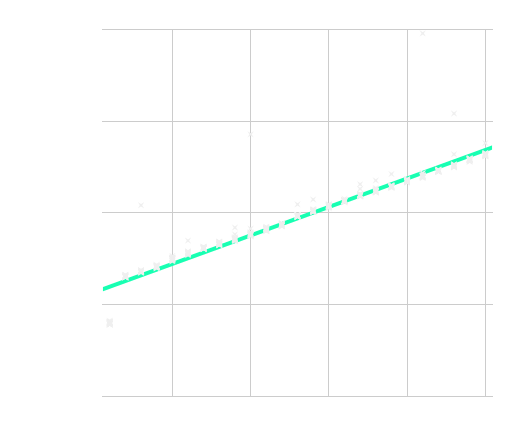
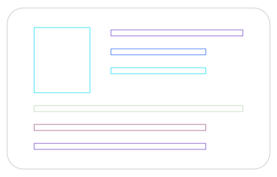

<!DOCTYPE html>
<html lang="en">

<head>
  <meta charset="utf-8" />
  <meta name="viewport" content="width=device-width, initial-scale=1.0, maximum-scale=1.0, user-scalable=no" />

  <title>FRAME Benchmarking</title>
  <link rel="shortcut icon" href="./../../../assets/favicon.ico" />
  <link rel="stylesheet" href="./../../../dist/reset.css" />
  <link rel="stylesheet" href="./../../../dist/reveal.css" />
  <link rel="stylesheet" href="./../../../assets/styles/PBA-theme.css" id="theme" />
  <link rel="stylesheet" href="./../../../css/highlight/shades-of-purple.css" />

  <link rel="stylesheet" href="./../../.././assets/styles/custom-classes.css" />

</head>

<body class="site">
  <header class="site-header">
    <!-- This logo is a link only on the watching server, not the production build -->
      
  </header>
  <main class="reveal">
    <article class="slides">
      <section  data-markdown><script type="text/template">

# FRAME Benchmarking
</script></section><section  data-markdown><script type="text/template">
## Overview

- Quick Recap of Weights
- Deep Dive Into Benchmarking
</script></section><section  data-markdown><script type="text/template">
## Blockchains are Limited

Blockchain systems are extremely limited environments.

Limited in:

- Execution Time / Block Time
- Available Storage
- Available Memory
- Network Bandwidth
- etc...
</script></section><section  data-markdown><script type="text/template">
## Performance vs Centralization

Nodes are expected to be decentralized and distributed.

Increasing the system requirements can potentially lead to centralization in who can afford to run that hardware, and where such hardware may be available.
</script></section><section  data-markdown><script type="text/template">
## Why do we need benchmarking?

Benchmarking ensures that when users interact with our Blockchain, they are not using resources beyond what is available and expected for our network.
</script></section><section  data-markdown><script type="text/template">
## What is Weight?

Weight is a general concept used to track consumption of limited blockchain resources.
</script></section><section  data-markdown><script type="text/template">
## What is Weight in Substrate?

We currently track just two main limitations:

- Execution Time on "Reference Hardware"
- Size of Data Required to Create a Merkle Proof

```rust
pub struct Weight {
	/// The weight of computational time used based on some reference hardware.
	ref_time: u64,
	/// The weight of storage space used by proof of validity.
	proof_size: u64,
}
```

This was already expanded once, and could be expanded in the future.
</script></section><section  data-markdown><script type="text/template">
## Weight limits are specific to each blockchain.

- 1 second of compute on different computers allows for different amounts of computation.
- Weights of your blockchain will evolve over time.
- Higher hardware requirements will result in a more performant blockchain (i.e. TXs per second), but will limit the kinds of validators that can safely participate in your network.
- Proof size limitations can be relevant for parachains, but ignored for solo-chains.
</script></section><section  data-markdown><script type="text/template">
## What can affect relative Weight?

<pba-cols>

<pba-col>

- Processor
- Memory
- Hard Drive
  - HDD vs. SSD vs. NVME
- Operating System
- Drivers
- Rust Compiler

</pba-col>
<pba-col>

- Runtime Execution Engine
  - compiled vs. interpreted
- Database
  - RocksDB vs. ParityDB vs. ?
- Merkle trie / storage format
- and more!

</pba-col>
</pba-cols>
</script></section><section  data-markdown><script type="text/template">
## Block Import Weight Breakdown


</script></section><section  data-markdown><script type="text/template">
# The Benchmarking Framework
</script></section><section  data-markdown><script type="text/template">
## The Benchmarking Plan

<div class="flex-container">
<div class="left-large">

- Use empirical measurements of the runtime to determine the time and space it takes to execute extrinsics and other runtime logic.
- Run benchmarks using worst case scenario conditions.
  - Primary goal is to keep the runtime safe.
  - Secondary goal is to be as accurate as possible to maximize throughput.

</div>
<div class="right">


</div>
</div>
</script></section><section  data-markdown><script type="text/template">
## The `benchmarks!` Macro

```rust
benchmarks! {
   extrinsic_name {
       /* setup initial state */
   }: _{ /* execute extrinsic or function */ }
   verify {
       /* verify final state */
   }
}
```

This is getting updated to the attribute macro format soon!

https://github.com/paritytech/substrate/pull/12924
</script></section><section  data-markdown><script type="text/template">
## Multiple Linear Regression Analysis

<div class="flex-container">
<div class="left-small">



</div>
<div class="right">

- We require that no functions in Substrate have superlinear complexity.
- Ordinary least squared linear regression.
  - linregress crate
- Supports multiple linear coefficients.
  - Y = Ax + By + Cz + k
- For constant time functions, we simply use the median value.

</div>
</div>
</script></section><section  data-markdown><script type="text/template">
## The `benchmark` CLI

Compile your node with `--features runtime-benchmarks`.

```sh
➜  ~ substrate benchmark --help
Sub-commands concerned with benchmarking.
The pallet benchmarking moved to the `pallet` sub-command

Usage: polkadot benchmark <COMMAND>

Commands:
  pallet     Benchmark the extrinsic weight of FRAME Pallets
  storage    Benchmark the storage speed of a chain snapshot
  overhead   Benchmark the execution overhead per-block and per-extrinsic
  block      Benchmark the execution time of historic blocks
  machine    Command to benchmark the hardware
  extrinsic  Benchmark the execution time of different extrinsics
  help       Print this message or the help of the given subcommand(s)

Options:
  -h, --help     Print help information
  -V, --version  Print version information
```
</script></section><section  data-markdown><script type="text/template">
## `pallet` Subcommand

- Benchmark the weight of functions within pallets.
  - Any arbitrary code can be benchmarked.
- Outputs Autogenerated Weight files.

```rust
pub trait WeightInfo {
   fn transfer() -> Weight;
   fn transfer_keep_alive() -> Weight;
   fn set_balance_creating() -> Weight;
   fn set_balance_killing() -> Weight;
   fn force_transfer() -> Weight;
}
```
</script></section><section  data-markdown><script type="text/template">
# Deep Dive

So let’s walk through the steps of a benchmark!

Reference: `frame/benchmarking/src/lib.rs`

```rust
-> fn run_benchmark(...)
```
</script></section><section  data-markdown><script type="text/template">
## The Benchmarking Process

For each component and repeat:

1. Select component to benchmark
1. Generate range of values to test (steps)
1. Whitelist known DB keys
1. Setup benchmarking state
1. Commit state to the DB, clearing cache
1. Get system time (start)
1. Execute extrinsic / benchmark function
1. Get system time (end)
1. Count DB reads and writes
1. Record Data
</script></section><section  data-markdown><script type="text/template">
## Benchmarking Components

- Imagine a function with 3 components
  - let x in 1..2;
  - let y in 0..5;
  - let z in 0..10;
- We set number of steps to 3.
- Vary one component at a time, select high value for the others.

|     | Δx  | Δy  | Δy  | Δz  | Δz  | max |
| --- | --- | --- | --- | --- | --- | --- |
| x   | 1   | 2   | 2   | 2   | 2   | 2   |
| y   | 5   | 0   | 2   | 5   | 5   | 5   |
| z   | 10  | 10  | 10  | 0   | 5   | 10  |
</script></section><section  data-markdown><script type="text/template">
## Benchmarks Evaluated Over Components


</script></section><section  data-markdown><script type="text/template">
## Whitelisted DB Keys

```rust [3]
/// The current block number being processed. Set by `execute_block`.
#[pallet::storage]
#[pallet::whitelist_storage]
#[pallet::getter(fn block_number)]
pub(super) type Number<T: Config> = StorageValue<_, T::BlockNumber, ValueQuery>;
```

- Some keys are accessed every block:
  - Block Number
  - Events
  - Total Issuance
  - etc…
- We don’t want to count these reads and writes in our benchmarking results.
- Applied to all benchmarks being run.
- This includes a “whitelisted account” provided by FRAME.
</script></section><section  data-markdown><script type="text/template">
## Example Benchmark

The Identity Pallet


</script></section><section  data-markdown><script type="text/template">
## Identity Pallet

- Identity can have variable amount of information
  - Name
  - Email
  - Twitter
  - etc…
- Identity can be judged by a variable amount of registrars.
- Identity can have a two-way link to “sub-identities”
  - Other accounts that inherit the identity status of the “super-identity”
</script></section><section  data-markdown><script type="text/template">
## Extrinsic: Kill Identity

```rust
pub fn kill_identity(
	origin: OriginFor<T>,
	target: AccountIdLookupOf<T>,
) -> DispatchResultWithPostInfo {
	T::ForceOrigin::ensure_origin(origin)?;

	// Figure out who we're meant to be clearing.
	let target = T::Lookup::lookup(target)?;

	// Grab their deposit (and check that they have one).
	let (subs_deposit, sub_ids) = <SubsOf<T>>::take(&target);
	let id = <IdentityOf<T>>::take(&target).ok_or(Error::<T>::NotNamed)?;
	let deposit = id.total_deposit() + subs_deposit;
	for sub in sub_ids.iter() { <SuperOf<T>>::remove(sub); }

	// Slash their deposit from them.
	T::Slashed::on_unbalanced(T::Currency::slash_reserved(&target, deposit).0);
	Self::deposit_event(Event::IdentityKilled { who: target, deposit });
	Ok(())
}
```
</script></section><section  data-markdown><script type="text/template">
## Handling Configurations

- `kill_identity` will only execute if the `ForceOrigin` is calling.

```rust
T::ForceOrigin::ensure_origin(origin)?;
```

- However, this is configurable by the pallet developer.
- Our benchmark needs to always work independent of the configuration.
- We added a special function behind a feature flag:

```rust
/// Returns an outer origin capable of passing `try_origin` check.
///
/// ** Should be used for benchmarking only!!! **
#[cfg(feature = "runtime-benchmarks")]
fn successful_origin() -> OuterOrigin;
```
</script></section><section  data-markdown><script type="text/template">
## External Logic / Hooks

```rust
// Figure out who we're meant to be clearing.
let target = T::Lookup::lookup(target)?;
```

- In general, hooks like these are configurable in the runtime.
- Each blockchain will have their own logic, and thus their own weight.
- We run benchmarks against the real runtime, so we get the real results.
- **IMPORTANT!** You need to be careful that the limitations of these hooks are well understood by the pallet developer and users of your pallet, otherwise, your benchmark will not be accurate.
</script></section><section  data-markdown><script type="text/template">
## Deterministic Storage Reads / Writes

```rust
// Grab their deposit (and check that they have one).
let (subs_deposit, sub_ids) = <SubsOf<T>>::take(&target);
let id = <IdentityOf<T>>::take(&target).ok_or(Error::<T>::NotNamed)?;
```

- 2 storage reads and writes.
- The size of these storage items will depends on:
  - Number of Registrars
  - Number of Additional Fields
</script></section><section  data-markdown><script type="text/template">
## Variable Storage Reads / Writes

```rust
for sub in sub_ids.iter() { <SuperOf<T>>::remove(sub); }
```

- S storage writes, where S is the number of sub-accounts.
- S is unknown for the initial weight, so we must assume an upper bound.
</script></section><section  data-markdown><script type="text/template">
## More Configurable Logic

```rust
// Slash their deposit from them.
T::Slashed::on_unbalanced(T::Currency::slash_reserved(&target, deposit).0);
```

- A balance operation, generally takes 1 read and 1 write
- But is also configurable depending on where you store balances!
- What happens with slashed funds is configurable too!
</script></section><section  data-markdown><script type="text/template">
## Whitelisted Storage

```rust
Self::deposit_event(Event::IdentityKilled { who: target, deposit });
```

- We whitelist changes to the Events storage item, so generally this is “free” beyond computation and in-memory DB weight.
</script></section><section  data-markdown><script type="text/template">
## Preparing to Write Your Benchmark

- 3 Components

  - `R` - number of registrars
  - `S` - number of sub-accounts
  - `X` - number of additional fields

- Need to:
  - Set up account with funds.
  - Register an identity with additional fields.
  - Set up worst case scenario for registrars and sub-accounts.
  - Take into account `ForceOrigin` to make the call.
</script></section><section  data-markdown><script type="text/template">
## Kill Identity Benchmark

```rust
kill_identity {
	let r in 1 .. T::MaxRegistrars::get() => add_registrars::<T>(r)?;
	let s in 0 .. T::MaxSubAccounts::get();
	let x in 0 .. T::MaxAdditionalFields::get();

	let target: T::AccountId = account("target", 0, SEED);
	let target_origin: <T as frame_system::Config>::RuntimeOrigin = RawOrigin::Signed(target.clone()).into();
	let target_lookup = T::Lookup::unlookup(target.clone());
	let _ = T::Currency::make_free_balance_be(&target, BalanceOf::<T>::max_value());

	let info = create_identity_info::<T>(x);
	Identity::<T>::set_identity(target_origin.clone(), Box::new(info.clone()))?;
	let _ = add_sub_accounts::<T>(&target, s)?;

	// User requests judgement from all the registrars, and they approve
	for i in 0..r {
		let registrar: T::AccountId = account("registrar", i, SEED);
		let balance_to_use =  T::Currency::minimum_balance() * 10u32.into();
		let _ = T::Currency::make_free_balance_be(&registrar, balance_to_use);

		Identity::<T>::request_judgement(target_origin.clone(), i, 10u32.into())?;
		Identity::<T>::provide_judgement( RawOrigin::Signed(registrar).into(), i, target_lookup.clone(), Judgement::Reasonable, T::Hashing::hash_of(&info),
		)?;
	}
	ensure!(IdentityOf::<T>::contains_key(&target), "Identity not set");
	let origin = T::ForceOrigin::successful_origin();
}: _<T::RuntimeOrigin>(origin, target_lookup)
verify {
	ensure!(!IdentityOf::<T>::contains_key(&target), "Identity not removed");
}
```
</script></section><section  data-markdown><script type="text/template">
## Benchmarking Components

```rust
let r in 1 .. T::MaxRegistrars::get() => add_registrars::<T>(r)?;
let s in 0 .. T::MaxSubAccounts::get();
let x in 0 .. T::MaxAdditionalFields::get();
```

- Our components.
  - R = Number of Registrars
  - S = Number of Sub-Accounts
  - X = Number of Additional Fields on the Identity.
- Note all of these have configurable, known at compile time maxima.
  - Part of the pallet configuration trait.
  - Runtime logic should enforce these limits.
</script></section><section  data-markdown><script type="text/template">
## Set Up Logic

```rust
let target: T::AccountId = account("target", 0, SEED);
let target_origin: <T as frame_system::Config>::RuntimeOrigin = RawOrigin::Signed(target.clone()).into();
let target_lookup = T::Lookup::unlookup(target.clone());
let _ = T::Currency::make_free_balance_be(&target, BalanceOf::<T>::max_value());
```

- Set up an account with the appropriate funds.
- Note this is just like writing runtime tests!
</script></section><section  data-markdown><script type="text/template">
## Reusable Setup Functions

```rust
let info = create_identity_info::<T>(x);
Identity::<T>::set_identity(target_origin.clone(), Box::new(info.clone()))?;
let _ = add_sub_accounts::<T>(&target, s)?;
```

- Using some custom functions defined in the benchmarking file:
- Give that account an Identity with x additional fields.
- Give that Identity `s` sub-accounts.
</script></section><section  data-markdown><script type="text/template">
## Set Up Worst Case Scenario

```rust
// User requests judgement from all the registrars, and they approve
for i in 0..r {
	let registrar: T::AccountId = account("registrar", i, SEED);
	let balance_to_use =  T::Currency::minimum_balance() * 10u32.into();
	let _ = T::Currency::make_free_balance_be(&registrar, balance_to_use);

	Identity::<T>::request_judgement(target_origin.clone(), i, 10u32.into())?;
	Identity::<T>::provide_judgement( RawOrigin::Signed(registrar).into(), i, target_lookup.clone(), Judgement::Reasonable, T::Hashing::hash_of(&info),
	)?;
}
```

- Add r registrars.
- Have all of them give a judgement to this identity.
</script></section><section  data-markdown><script type="text/template">
## Execute and Verify the Benchmark:

```rust
kill_identity {
	// -- snip --

	ensure!(IdentityOf::<T>::contains_key(&target), "Identity not set");
	let origin = T::ForceOrigin::successful_origin();
}: _<T::RuntimeOrigin>(origin, target_lookup)
verify {
	ensure!(!IdentityOf::<T>::contains_key(&target), "Identity not removed");
}
```

- First ensure statement verifies the “before” state is as we expect.
- We need to use our custom origin.
- Verify block ensures our “final” state is as we expect.
</script></section><section  data-markdown><script type="text/template">
## Executing the Benchmark

```sh
./target/production/substrate benchmark pallet \
	--chain=dev \				# Configurable Chain Spec
	--steps=50 \				# Number of steps across component ranges
	--repeat=20 \				# Number of times we repeat a benchmark
	--pallet=pallet_identity \	# Select the pallet
	--extrinsic=* \				# Select the extrinsic(s)
	--execution=wasm \			# Always run with Wasm
	--wasm-execution=compiled \ # Always used `wasm-time`
	--heap-pages=4096 \			# Not really needed, adjusts memory
	--output=./frame/identity/src/weights.rs \	# Output results into a Rust file
	--header=./HEADER-APACHE2 \	# Custom header file to include with template
	--template=./.maintain/frame-weight-template.hbs # Handlebar template
```
</script></section><section  data-markdown><script type="text/template">
# Looking at Raw Benchmarking Data
</script></section><section  data-markdown><script type="text/template">
## Results: Extrinsic Time vs. # of Registrars


</script></section><section  data-markdown><script type="text/template">
## Results: Extrinsic Time vs. # of Sub-Accounts


</script></section><section  data-markdown><script type="text/template">
## Results: Extrinsic Time vs. Additional Fields


</script></section><section  data-markdown><script type="text/template">
## Result: DB Operations vs. Sub Accounts


</script></section><section  data-markdown><script type="text/template">
## Final Weight

```rust
// Storage: Identity SubsOf (r:1 w:1)
// Storage: Identity IdentityOf (r:1 w:1)
// Storage: System Account (r:1 w:1)
// Storage: Identity SuperOf (r:0 w:100)
/// The range of component `r` is `[1, 20]`.
/// The range of component `s` is `[0, 100]`.
/// The range of component `x` is `[0, 100]`.
fn kill_identity(r: u32, s: u32, x: u32, ) -> Weight {
	// Minimum execution time: 68_794 nanoseconds.
	Weight::from_ref_time(52_114_486 as u64)
		// Standard Error: 4_808
		.saturating_add(Weight::from_ref_time(153_462 as u64).saturating_mul(r as u64))
		// Standard Error: 939
		.saturating_add(Weight::from_ref_time(1_084_612 as u64).saturating_mul(s as u64))
		// Standard Error: 939
		.saturating_add(Weight::from_ref_time(170_112 as u64).saturating_mul(x as u64))
		.saturating_add(T::DbWeight::get().reads(3 as u64))
		.saturating_add(T::DbWeight::get().writes(3 as u64))
		.saturating_add(T::DbWeight::get().writes((1 as u64).saturating_mul(s as u64)))
}
```
</script></section><section  data-markdown><script type="text/template">
## WeightInfo Generation

```rust
/// Weight functions needed for pallet_identity.
pub trait WeightInfo {
	fn add_registrar(r: u32, ) -> Weight;
	fn set_identity(r: u32, x: u32, ) -> Weight;
	fn set_subs_new(s: u32, ) -> Weight;
	fn set_subs_old(p: u32, ) -> Weight;
	fn clear_identity(r: u32, s: u32, x: u32, ) -> Weight;
	fn request_judgement(r: u32, x: u32, ) -> Weight;
	fn cancel_request(r: u32, x: u32, ) -> Weight;
	fn set_fee(r: u32, ) -> Weight;
	fn set_account_id(r: u32, ) -> Weight;
	fn set_fields(r: u32, ) -> Weight;
	fn provide_judgement(r: u32, x: u32, ) -> Weight;
	fn kill_identity(r: u32, s: u32, x: u32, ) -> Weight;
	fn add_sub(s: u32, ) -> Weight;
	fn rename_sub(s: u32, ) -> Weight;
	fn remove_sub(s: u32, ) -> Weight;
	fn quit_sub(s: u32, ) -> Weight;
}
```
</script></section><section  data-markdown><script type="text/template">
## WeightInfo Integration

```rust
#[pallet::weight(T::WeightInfo::kill_identity(
	T::MaxRegistrars::get(), // R
	T::MaxSubAccounts::get(), // S
	T::MaxAdditionalFields::get(), // X
))]
pub fn kill_identity(
	origin: OriginFor<T>,
	target: AccountIdLookupOf<T>,
) -> DispatchResultWithPostInfo {

	// -- snip --

	Ok(Some(T::WeightInfo::kill_identity(
		id.judgements.len() as u32,      // R
		sub_ids.len() as u32,            // S
		id.info.additional.len() as u32, // X
	))
	.into())
}
```
</script></section><section  data-markdown><script type="text/template">
## Initial Weight

```rust
#[pallet::weight(T::WeightInfo::kill_identity(
	T::MaxRegistrars::get(), // R
	T::MaxSubAccounts::get(), // S
	T::MaxAdditionalFields::get(), // X
))]
```

- Use the WeightInfo function as the weight definition for your function.
- Note that we assume absolute worst case scenario to begin since we cannot know these specific values until we query storage.
</script></section><section  data-markdown><script type="text/template">
## Final Weight (Refund)

```rust
pub fn kill_identity(...) -> DispatchResultWithPostInfo { ... }
```

```rust
Ok(Some(T::WeightInfo::kill_identity(
	id.judgements.len() as u32,      // R
	sub_ids.len() as u32,            // S
	id.info.additional.len() as u32, // X
))
.into())
```

- Then we return the actual weight used at the end!
- We use the same WeightInfo formula, but using the values that we queried from storage as part of executing the extrinsic.
- This only allows you to **decrease** the final weight. Nothing will happen if you return a bigger weight than the initial weight.
</script></section><section  data-markdown><script type="text/template">
<!-- .slide: data-background-color="#4A2439" -->

# Questions

In another presentation we will cover some of the things we learned while benchmarking, and best practices.
</script></section><section  data-markdown><script type="text/template">
# Benchmarking Exercise
</script></section>
    </article>
  </main>

  <script src="./../../../dist/reveal.js"></script>

  <script src="./../../../plugin/markdown/markdown.js"></script>
  <script src="./../../../plugin/highlight/highlight.js"></script>
  <script src="./../../../plugin/zoom/zoom.js"></script>
  <script src="./../../../plugin/notes/notes.js"></script>
  <script src="./../../../plugin/math/math.js"></script>
  <script>
    function extend() {
      var target = {};
      for (var i = 0; i < arguments.length; i++) {
        var source = arguments[i];
        for (var key in source) {
          if (source.hasOwnProperty(key)) {
            target[key] = source[key];
          }
        }
      }
      return target;
    }

    // default options to init reveal.js
    var defaultOptions = {
      controls: true,
      progress: true,
      history: true,
      center: true,
      transition: 'default', // none/fade/slide/convex/concave/zoom
      slideNumber: true,
      plugins: [
        RevealMarkdown,
        RevealHighlight,
        RevealZoom,
        RevealNotes,
        RevealMath
      ]
    };

    // options from URL query string
    var queryOptions = Reveal().getQueryHash() || {};

    var options = extend(defaultOptions, {"width":1400,"height":900,"margin":0,"minScale":0.2,"maxScale":2,"transition":"none","controls":true,"progress":true,"center":true,"slideNumber":true,"backgroundTransition":"fade"}, queryOptions);
  </script>


  <script>
    Reveal.initialize(options);
  </script>
</body>

</html>
